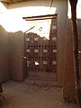
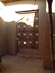
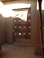

Construite entre 1325 et 1327 par Abou Ishaq es-Sahéli sous le règne de l'empereur de Kankan Moussa à son retour de La Mecque. La mosquée est faite en banco, un matériau fait de terre cuite. Selon Ibn Khaldoun, l'empereur offrit à Sahéli 12 000 mithqals (soit environ 200 kg) de poussière d'or pour sa conception et sa construction. Toutefois on estime aujourd'hui que son rôle dans la construction fut limité1. C'est la plus grande mosquée de Tombouctou. Elle peut accueillir la prière du vendredi qui rassemble jusqu'à 12 000 fidèles.

La mosquée Sidi Yahya (français: Mosquée de Sidi Yahya , arabe: جامع سيدي يحيى), également connue sous le nom de mosquée de Muhammad-n-Allah, [3] est une mosquée et une madrassa de Tombouctou au Mali . La construction de la mosquée a commencé en 1400 sous la direction de Sheikh El-Mokhtar Hamalla de Tombouctou et s'est terminée en 1440 après JC [4] [5] La mosquée a été nommée d'après son premier imam, Sidi Yahya al-Tadelsi. [3] La mosquée fait partie de l' Université de Tombouctou , qui comprend les madrasas de Sidi Yahya, Djinguereber et Sankoré. La mosquée est un exemple typique de l'architecture en terre du style soudano-sahélien , mais présente également des formes distinctives de plan et d'ornement. Des parties de la mosquée de Sidi Yahya ont été détruites par les djihadistes d'Ansar Dine le 2 juillet 2012, à la suite de la bataille de Gao et de Tombouctou . [6] Ces éléments ont été reconstruits plus tard sous la direction de l'équipe de l'UNESCO.
La Grande mosquée de Djenné est le plus grand édifice du monde en adobe (ou terre crue – on dit aussi banco en Afrique) ; elle est considérée comme la réalisation majeure du style architectural soudano-sahélien, tout en reflétant des influences islamiques.